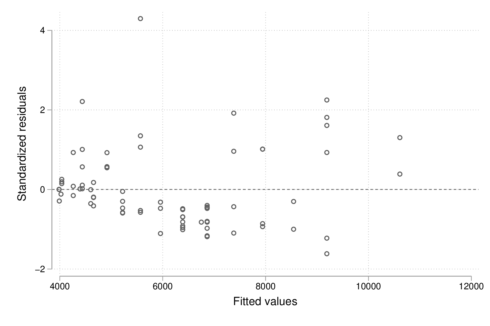

Stata : un rapide tour d’horizon
Table des matières
Ce document présente selon un angle très pragmatique une session de travail typique avec le logiciel Stata. Il ne s’agit pas de couvrir toutes les fonctionnalités de Stata, ni de présenter en détails les principales commandes Stata, voire même la représentation interne des données sus Stata. Au contraire, l’idée est d’offrir un panorama de certaines fonctionnalités de Stata et comment organiser une session de travail simple avec comme objectif la réalisation d’un modèle de régression linéaire.
Stata en quelques mots
Stata est un logiciel d’analyses statistiques développé dans les années 80 par une équipe de statisticiens américains, dont William Gould. À l’origine, il s’agissait esentiellement d’un logiciel orienté vers le traitement des enquêtes et des séries chronologiques [2], puis ses fonctionnalités se sont largement développées pour en faire à l’heure actuelle un logiciel très performant dans de nombreux domaines d’application, principalement le traitement des enquêtes [4], l’économétrie [1] ou l’épidémiologie [3]. Les ouvrages publiés par Stata Press incluent en général un ou deux chapitres de présentation des principales commandes Stata.
Une fois installé, le logiciel Stata est entièrement fonctionnel et dispose de toutes les procédures statistiques et graphiques que l’on attend d’un logiciel statistique. Il est toutefois possible d’installer des modules additionnels depuis internet (www.stata.com, SSC, Github, sites personnels). Mais en règle générale, les commandes de base disponibles dans Stata suffisent largement à couvrir l’essentiel des besoins en termes de gestion de données et d’analyses statistiques.
Une autre caractéristique remarquable de Stata est la qualité de sa documentation. Pour la version 15, on dénombre pas moins 30 manuels en version PDF pour un total de 14791 pages.1 Ces documents PDF sont accessibles depuis le menu d’aide interne de Stata et se consulte généralement à l’aide d’Acrobat Reader, mais il est toujours possible de consulter le fichier d’index « i.pdf » et de naviguer dans la documentation à partir de celui-ci. Pour bien débuter avec Stata, il est conseillé de lire le manuel [D] (Data management).
En mode interactif, il y a deux manières de travailler avec Stata : en saisissant des instructions dans le panneau de commande ou en utilisant les menus et boîtes de dialogue de l’interface graphique. On privilégira la première option par souci de simplicité pour l’exposé et à plus long terme de reproducibilité des analyses statistiques puisque l’on verra comment enregistrer toutes les commandes dans un fichier appelé fichier « do » ou do-file.
Prise en main de Stata
Un modèle de régression linéaire
Une fois Stata lancé, voici quelques commandes à saisir dans le panneau de commande. Il s’agit du panneau central dans l’interface Stata, de hauteur réduite et intitulé « Command ». Il est généralement situé en dessous du panneau de résultats (« Results »). Ce sont les seuls éléments de l’interface graphique de Stata qui nous intéresseront dans ce tutoriel. Ces trois commandes vont successivement charger un jeu de données fourni lors de l’installation de Stata, produire un résumé numérique de deux variables, appelées price et mpg, et estimer les paramètres d’un modèle de régression linéaire simple.
sysuse auto, clear summarize price mpg regress price mpg
set more off
sysuse auto, clear
(1978 Automobile Data)
summarize price mpg
Variable | Obs Mean Std. Dev. Min Max
-------------+---------------------------------------------------------
price | 74 6165.257 2949.496 3291 15906
mpg | 74 21.2973 5.785503 12 41
regress price mpg
Source | SS df MS Number of obs = 74
-------------+---------------------------------- F(1, 72) = 20.26
Model | 139449474 1 139449474 Prob > F = 0.0000
Residual | 495615923 72 6883554.48 R-squared = 0.2196
-------------+---------------------------------- Adj R-squared = 0.2087
Total | 635065396 73 8699525.97 Root MSE = 2623.7
------------------------------------------------------------------------------
price | Coef. Std. Err. t P>|t| [95% Conf. Interval]
-------------+----------------------------------------------------------------
mpg | -238.8943 53.07669 -4.50 0.000 -344.7008 -133.0879
_cons | 11253.06 1170.813 9.61 0.000 8919.088 13587.03
------------------------------------------------------------------------------
Dans l’exemple ci-dessus comme dans les suivants, on présentera systématiquement une commande ou une série de commandes suivi des résultats produits par Stata. Le deuxième encart reflète donc la sortie produite par Stata dans sa fenêtre « Results », à l’exception de l’invite de commande Stata symbolisée par un point (« . »). Pour en revenir à l’exemple précédent, deux choses sont remarquables : (1) les commandes Stata suivent l’idée anglo-saxonne que l’on peut se faire des actions que l’on souhaite réaliser (use pour utiliser et sysuse pour utiliser depuis le système, summarize pour résumer, et regress pour régresser une variable sur une autre) ; (2) dans la majorité des cas, une commande produit un résultat, qu’il s’agisse de l’affichage d’un message ou d’un résultat numérique mis en forme automatiquement par Stata.
Le jeu de données utilisé concerne un ensemble de voitures dont l’une des caractéristiques est l’origine de la marque : la variable foreign indique si la voiture est de marque étrangère (foreign = 1) ou non (foreign = 0). Pour avoir une idée plus précise de l’ensemble des variables disponibles dans ce tableau de données, on peut utiliser la commande codebook ou describe :
describe
describe
Contains data from /Applications/Stata/ado/base/a/auto.dta
obs: 74 1978 Automobile Data
vars: 12 13 Apr 2016 17:45
size: 3,182 (_dta has notes)
-------------------------------------------------------------------------------
storage display value
variable name type format label variable label
-------------------------------------------------------------------------------
make str18 %-18s Make and Model
price int %8.0gc Price
mpg int %8.0g Mileage (mpg)
rep78 int %8.0g Repair Record 1978
headroom float %6.1f Headroom (in.)
trunk int %8.0g Trunk space (cu. ft.)
weight int %8.0gc Weight (lbs.)
length int %8.0g Length (in.)
turn int %8.0g Turn Circle (ft.)
displacement int %8.0g Displacement (cu. in.)
gear_ratio float %6.2f Gear Ratio
foreign byte %8.0g origin Car type
-------------------------------------------------------------------------------
Sorted by: foreign
Notons qu’aucun nom de variable n’est fourni après la commande describe, ce qui revient à considérer l’ensemble des variables. Il serait équivalent de spécifier explicitement les variables à l’aide de describe make-foreign ou describe *. La notion de variable et de liste de variables est centrale dans l’utilisation de Stata qui est un langage essentiellement orienté variables (c’est-à-dire les colonnes du tableau de données). Les commandes Stata possèdent généralement des options qui modifient leur comportement ou les résultats renvoyés dans la fenêtre de résultats. Dans le cas de describe, par exemple, l’option simple permet de lister uniquement le nom des variables. Les options se placent après les paramètres principaux de la commande et d’une virgule « , ». On écrirait donc describe, simple. Enfin, les commandes peuvent être abrégées à l’aide du plus petit préfixe non ambigü, et le nom de commande abrégé apparaît souligné dans l’aide en ligne de Stata (help describe).
Supposons que l’on souhaite réaliser le même modèle de régression que le précédent mais en restreignant l’analyse aux seuls véhicules de marque étrangère. Pour cela, il suffit d’appliquer un filtre pour sélectionner les observations vérifiant la condition foreign==1 (« la variable foreign prend la valeur 1 ») :
regress price mpg if foreign == 1
regress price mpg if foreign == 1
Source | SS df MS Number of obs = 22
-------------+---------------------------------- F(1, 20) = 13.25
Model | 57534941.7 1 57534941.7 Prob > F = 0.0016
Residual | 86828271.1 20 4341413.55 R-squared = 0.3985
-------------+---------------------------------- Adj R-squared = 0.3685
Total | 144363213 21 6874438.7 Root MSE = 2083.6
------------------------------------------------------------------------------
price | Coef. Std. Err. t P>|t| [95% Conf. Interval]
-------------+----------------------------------------------------------------
mpg | -250.3668 68.77435 -3.64 0.002 -393.8276 -106.906
_cons | 12586.95 1760.689 7.15 0.000 8914.217 16259.68
------------------------------------------------------------------------------
La notion de filtres appliqués à l’aide des qualificateurs by, if et in est également centrale dans Stata puisque ceux-ci permettent de sélectionner un sous-ensemble d’observations (les lignes du tableau de données) selon des conditions logiques. À ce titre, le symbole représetant l’égalité logique est un double signe égal (==) alors que le signe égal simple est réservé à l’opération d’affectation. Il serait possible de réutiliser la même instruction pour estimer le modèle de régression pour les observations vérifiant la condition « foreign vaut 0 », mais plutôt que de copier/coller ou rappeller la même commande à l’aide des flèches haut/bas du clavier dans la fenêtre de commande, il est préférable d’utiliser le préfixe by :
by foreign, sort: regress price mpg
by foreign, sort: regress price mpg
-------------------------------------------------------------------------------
-> foreign = Domestic
Source | SS df MS Number of obs = 52
-------------+---------------------------------- F(1, 50) = 17.05
Model | 124392956 1 124392956 Prob > F = 0.0001
Residual | 364801844 50 7296036.89 R-squared = 0.2543
-------------+---------------------------------- Adj R-squared = 0.2394
Total | 489194801 51 9592054.92 Root MSE = 2701.1
------------------------------------------------------------------------------
price | Coef. Std. Err. t P>|t| [95% Conf. Interval]
-------------+----------------------------------------------------------------
mpg | -329.2551 79.74034 -4.13 0.000 -489.4183 -169.0919
_cons | 12600.54 1624.773 7.76 0.000 9337.085 15863.99
------------------------------------------------------------------------------
-------------------------------------------------------------------------------
-> foreign = Foreign
Source | SS df MS Number of obs = 22
-------------+---------------------------------- F(1, 20) = 13.25
Model | 57534941.7 1 57534941.7 Prob > F = 0.0016
Residual | 86828271.1 20 4341413.55 R-squared = 0.3985
-------------+---------------------------------- Adj R-squared = 0.3685
Total | 144363213 21 6874438.7 Root MSE = 2083.6
------------------------------------------------------------------------------
price | Coef. Std. Err. t P>|t| [95% Conf. Interval]
-------------+----------------------------------------------------------------
mpg | -250.3668 68.77435 -3.64 0.002 -393.8276 -106.906
_cons | 12586.95 1760.689 7.15 0.000 8914.217 16259.68
------------------------------------------------------------------------------
Si l’on souhaite obtenir les intervalles de confiance estimés pour nos paramètres à l’aide d’une technique de rééchantillonnage comme le bootstrap, il suffit de l’indiquer à Stata à l’aide du préfixe correspondant (bootstrap:) : la commande s’écrit alors bootstrap: regress price mpg. Un autre préfixe possible est bayes: (à partir de Stata 15) et, dans ce cas, ce sont des intervalles de crédibilité qui seront calculés automatiquement par Stata. On remplacera la commande précédente par bayes: regress price mpg. Attention, il ne s’agit pas d’un préfixe comme le préfixe by vu plus haut, mais d’un préfixe pour les commandes d’estimation.
Voici, en quelques mots, le mode de fonctionnement de base de Stata pour réaliser un modèle statistique : choisir la commande appropriée, indiquer les variables entrant dans le modèle sachant que la première variable joue toujours le rôle de variable réponse ou de variable à prédire, et éventuellement filtrer les observartions à utiliser dans le modèle. La syntaxe plus générale d’une commande prend la forme suivante :
[by varlist:] command [varlist] [=exp] [if exp] [in range] [weight] [using filename] [,options]
On reconnaît le préfixe by et les qualificateurs in et if, permettant de sélectionner les observations et de répéter une même opération pour chaque groupe d’observations défini par les valeurs prises par la ou les variables désignées après le préfixe by (la plupart des commandes Stata sont « byable »). La commande est suivi d’une ou plusieurs variables (une liste, appelée varlist) et éventuellement d’une expression (=exp) dans le cas où on construit explicitement la variable (cas de generate). Des poids de pondération (weight) peuvent être appliquées aux principales commandes Stata et il est possible d’interagir avec des fichiers externes à l’aide de using. Enfin, comme dit plus haut, les options des commandes sont indiquées après une virgule.
Visualiser et interpréter
Les instructions suivantes vont permettre de construire un diagramme de dispersion représentant la covariation des deux variables price et mpg et d’y superposer la droite de régression. Les mots clé graph et twoway peuvent être omis et le symbole || permet de superposer sur le même graphique plusieurs éléments. L’ancienne syntaxe consistant à isoler les instructions graphiques entre parenthèses est également valide.
Remarque : Les graphiques présentés dans ce document utilisent un schéma graphique spécifique, plotplain, qui peut être installé depuis le serveur SSC en tapant simplement la commande ssc install blindschemes. Pour rester cohérent avec la police utilisée dans ce document et parce qu’il n’est pas possible de définir la police des graphiques lorsque Stata est lancé en mode console, on utilisera systématiquement l’option fontface(), mais celle-ci peut être omise sans problème.
Voici donc pour le diagramme de dispersion et la droite de régression. L’ordre des variables suit celui du modèle de régression, et dans le cas des graphiques la première variable est représentée sur l’axe des ordonnées (verticalement) :
set scheme plotplain graph twoway scatter price mpg || lfit price mpg graph export "fig-00-scatter-price-mpg.pdf", fontface(DroidSans) replace
Figure 1 : Prix et vitesse des automobiles (ajustement linéaire)
Le graphique précédent suggère qu’une relation simplement linéaire entre les deux variables n’est pas vraiment satisfaisante. On peut imaginer utiliser une approche par polynômes ou par splines, mais dans l’immédiat ajoutons simplement un terme quadratique :
generate mpg2 = mpg * mpg regress price mpg mpg2
generate mpg2 = mpg * mpg
regress price mpg mpg2
Source | SS df MS Number of obs = 74
-------------+---------------------------------- F(2, 71) = 18.28
Model | 215835615 2 107917807 Prob > F = 0.0000
Residual | 419229781 71 5904644.81 R-squared = 0.3399
-------------+---------------------------------- Adj R-squared = 0.3213
Total | 635065396 73 8699525.97 Root MSE = 2429.9
------------------------------------------------------------------------------
price | Coef. Std. Err. t P>|t| [95% Conf. Interval]
-------------+----------------------------------------------------------------
mpg | -1265.194 289.5443 -4.37 0.000 -1842.529 -687.8593
mpg2 | 21.36069 5.938885 3.60 0.001 9.518891 33.20249
_cons | 22716.48 3366.577 6.75 0.000 16003.71 29429.24
------------------------------------------------------------------------------
Comme on le voit, la génération d’une nouvelle variable ne pose pas de difficulté majeure et il n’est même pas besoin de définir son type : Stata est capable d’inférer que la variable mpg2 est un nombre réel puisqu’elle est construite à partir du produit d’un nombre réel par lui même. La mise à jour du modèle linéaire est relativement simple puisqu’il suffit d’ajouter le nouveau prédicteur à la suite du prédicteur initial, mpg.
Pour construire un graphique incluant la courbe d’ajustement quadratique, on remplace simplement lfit par qfit comme illustré ci-après :
graph twoway scatter price mpg || qfit price mpg graph export "fig-00-scatter-price-mpg2.pdf", fontface(DroidSans) replace
Figure 2 : Prix et vitesse des automobiles (ajustement quadratique)
Les résultats calculés par Stata sont stockés en mémoire et sont disponibles immédiatement après une telle commande d’estimation. Par exemple, ci-après on affiche la valeur de retour r2_a, qui représente le coefficeint de détermination du modèle précédent :
display %4.3f e(r2_a)
display %4.3f e(r2_a) 0.321
Un affichage plus complexe pourrait inclure un mélange de texte et de résultat numérique, comme par exemple display "R2 = " %5.2f e(r2_a)*100 "%", et une utilisation plus avancée consisterait à définir une macro locale pour stocker le résultat d’un tel calcul, de manière statique ou dynamique.
L’analyse des résidus d’un modèle de régression est souvent négligée, pourtant elle permet de diagnostiquer assez rapidement la qualité d’ajustement du modèle de manière graphique et de vérifier si les conditions de validité d’interprétation du modèle (linéarité de la relation, constance de la variance) sont vérifiées ou non. Pour cela, on a essentiellement besoin des valeurs ajustées (c’est-à-dire les valeurs prédites par le modèle linéaire pour les données observées) et des valeurs résiduelles, qui représentent l’écart entre les valeurs observées et les valeurs ajustées. Une seule et même commande Stata, predict, permet de calculer ces deux séries de valeurs :
predict double yhat predict double ei, rstandard
Un simple diagramme de dispersion permettra ensuite d’évaluer graphiquement la stabilité de la variance et l’absence de pattern spécifique d’évolution des résidus selon les valeurs ajustées. Comme les résidus calculés sont des résidus standardisés, on s’attend à ce que 95 % des observations soit situées dans l’intervalle \([-2,2]\).
graph twoway scatter ei yhat, yline(0) graph export "fig-00-rvfplot-price-mpg2.pdf", fontface(DroidSans) replace

Figure 3 : Prix et vitesse des automobiles (valeurs ajustées et résidus)
Pour rendre ce dernier graphique un peu plus informatif, on peut imaginer rajouter une courbe loess et annoter les observations ayant des résidus standardisés supérieurs à 2 (en valeur absolue).
generate infl = _n if abs(ei) > 2 tostring infl, replace replace infl = " " if infl == "." scatter ei yhat, yline(0) || scatter ei yhat, ms(none) mlab(infl) mlabpos(12) || lowess ei yhat, legend(off) graph export "fig-00-rvfplot-price-mpg2-b.pdf", fontface(DroidSans) replace
Figure 4 : Prix et vitesse des automobiles (valeurs ajustées et résidus)
Cette dernière série d’instructions peut sembler un peu complexe lorsqu’on n’est pas familier avec la syntaxe Stata mais, en réalité, l’idée est assez simple. On souhaite afficher l’ensemble des observations à l’aide de marqueurs comme dans la figure 3 mais on souhaite annoter certains de ces points en indiquant le numéro d’observation associé lorsque les résidus \(e_i = y_i - \hat{y}_i\) (ei) sont supérieurs à 2 en valeur absolue. Pour identifier ces observations avec des résidus élevés, on génère une nouvelle variable, infl, qui prendra la valeur _n, c’est-à-dire le numéro de ligne, lorsque la condition est vérifiée. Cette variable est enseuite convertie au format chaîne de caractères et on remplace les valeurs manquantes (celles qui vérifient la condition \(\lvert e_i \rvert\le 2\)) par un espace afin d’éviter l’affichage d’un point « . » dans le graphique.
Synthétiser
Comme on peut le constater, les tableaux renvoyés par Stata dans la fenêtre de résultats sont relativement convenables pour une lecture à l’écran. En revanche, dans le cas de la génération d’un rapport structuré d’analyses, cette solution est limitée. Heureusement, il existe plusieurs possibilités pour exporter des tableaux générés par Stata au format texte, HTML ou PDF. Dans le dernier cas, cela nécessite de disposer d’un compilateur LATEX.
Dans un premier temps, on va simplement reprendre les deux modèles précédents et sauvegarder les résultats d’estimations. On pourrait très bien utiliser des macros locales pour stocker chacune des valeurs de retour mais cela risque de s’avérer rapidement fastidieux. On utilisera donc la famille de commande estimates :
quietly regress price mpg estimates store m0 estimates title: Base model quietly regress price mpg mpg2 estimates store m1 estimates title: Enhanced model
Dans les instructions ci-dessus, le préfixe quietly permet de réaliser l’estimation sans afficher les résultats dans la fenêtre de résultats de Stata. Les noms m0 et m1 ne correspondent pas à des noms de variable mais nous permettront d’identifier chacun des modèles par la suite. La commande estimates s’utilise immédiatement après la commande d’estimation et permet de stocker les valeurs retournées par cette dernière : on parle de commande de « post-estimation ».
Une fois stockés en mémoire, ces résultats d’estimation peuvent être affichés à l’aide de la commande estimates table :
estimates table m*, b(%7.2f) se(%7.2f) stats(N r2_a)
estimates table m*, b(%7.2f) se(%7.2f) stats(N r2_a)
----------------------------------
Variable | m0 m1
-------------+--------------------
mpg | -238.89 -1265.19
| 53.08 289.54
mpg2 | 21.36
| 5.94
_cons | 11253.06 22716.48
| 1170.81 3366.58
-------------+--------------------
N | 74 74
r2_a | 0.21 0.32
----------------------------------
legend: b/se
Les options ajoutées dans l’instruction précédente permettent d’ajouter les erreurs standard aux coefficients de régression, qui sont affichés par défaut avec estimates table, avec un formatage précis (7 positions réservées pour les chiffres dont deux décimales), ainsi que la taille de l’échantillon et le coefficient \(R^2\) ajusté. Il ne reste plus qu’à exporter ce tableau à l’aide de estout. Voici une première ébauche :
estout m0 m1, cells(b se) stats(N r2_a)
estout m0 m1, cells(b se) stats(N r2_a)
--------------------------------------
m0 m1
b/se b/se
--------------------------------------
mpg -238.8943 -1265.194
53.07669 289.5443
mpg2 21.36069
5.938885
_cons 11253.06 22716.48
1170.813 3366.577
--------------------------------------
N 74 74
r2_a .2087437 .3212682
--------------------------------------
Comme on peut le constater, moyennant le formatage des nombres, il s’agit à peu près du même résultat que celui produit par estimates table.
Voici notre commande finale, avec quelques améliorations de mise en page et de formatage des nombres :
estout m*, cells("b(fmt(3) label(Coef.)) p(label(P-value))" "se(label(SE)) t(par fmt(2))") ///
stats(N r2_a, labels("Sample size" R-squared) fmt(0 3))
Voici le résultat produit par la dernière commande :
----------------------------------------------------------------
m0 m1
Coef./SE P-value/t Coef./SE P-value/t
----------------------------------------------------------------
mpg -238.894 0.000 -1265.194 0.000
53.077 (-4.50) 289.544 (-4.37)
mpg2 21.361 0.001
5.939 (3.60)
_cons 11253.061 0.000 22716.476 0.000
1170.813 (9.61) 3366.577 (6.75)
----------------------------------------------------------------
Sample size 74 74
R-squared 0.209 0.321
----------------------------------------------------------------
Pour sauvegarder ce tableau au format texte, il suffira de rajouter using estout.txt avant la virgule qui précède la liste d’options. Notons qu’il est possible de remplacer les étapes impliquant quietly regress et estimates store à l’aide de eststo: qui fournit le même résultat. Il existe bien d’autres options qui peuvent être consultées sur le site dédié à estout. La commande tabout permet quant à elle de générer et d’exporter des tableaux complexes dans de nombreux formats. On pourra consulter l’ancien tutoriel de l’auteur Ian Watson, Publication quality tables in Stata: a tutorial for the tabout program (PDF), et visiter le site de la version 3 de tabout.
Enregistrer son travail
Pour sauvegarder tout ce travail, il suffit de créer un script de commandes Stata, appelé « do file », qui est un simple fichier texte avec l’extension « .do ». Voici un exemple de fichier, session.do, qui regroupe les principales commandes exploitées dans ce tutoriel :
version 15
set more off
capture log close
log using session, text
/* data source */
sysuse auto, clear
summarize mpg price
generate mpg2 = mpg*mpg
/* EDA */
graph twoway scatter price mpg || qfit price mpg
graph export "fig-00-scatter-price-mpg2.pdf", eplace
/* MOD */
eststo: quietly regress price mpg
eststo: quietly regress price mpg mpg2
/* Report */
estout m*, cells("b(fmt(3) label(Coef.)) p(label(P-value))" "se(label(SE)) t(par fmt(2))") ///
stats(N r2_a, labels("Sample size" R-squared) fmt(0 3))
log close
Pour aller plus loin
On trouve de nombreux tutoriels sur internet (la plupart du temps en anglais). En voici quelques-un :
- les ressources Stata ainsi que le blog Stata
- le site pédagogique de l’UCLA
Références
| [1] | Christopher F. Baum. An Introduction to Modern Econometrics Using Stata. Stata Press, 2006. |
| [2] | Nick Cox. A brief history of Stata on its 20th anniversary. The Stata Journal, 5(1):2--18, 2005. |
| [3] | Svend Juul and Morten Frydenberg. An Introduction to Stata for Health Researchers. Stata Press, 4 edition, 2014. |
| [4] | Ulrich Kohler and Frauke Kreuter. Data Analysis Using Stata. Stata Press, 3 edition, 2012. |
Notes de bas de page:
Si vous disposez d’un terminal, vous pouvez vérifier à l’aide de ces commandes (en adaptant le chemin d’accès au répertoire Stata): for i in /Applications/Stata/docs/*.pdf; do pdfinfo "$i" | grep "^Pages:"; done | awk '{s+=$2} END {print s}'.